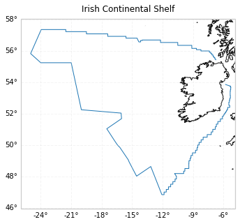

Irish Continental Shelf Data Sets
Irish Continental Shelf Data Sets¶
The EOOffshore project has involved the creation of a new wind data catalog, consisting of a collection of analysis-ready, cloud-optimized (ARCO) data sets, which features up to 21 years of available in situ, reanalysis, and satellite observation wind data products for the Irish Continental Shelf region.
 |
|---|
The Intake library is used to manage this catalog, where ARCO datasets have been generated using the Zarr format, enabling subsequent scalable processing with xarray and Dask.
Data |
Provider |
Time |
# Products |
Products Size (GB) |
Zarr (GB) |
|---|---|---|---|---|---|
2016-01 to 2021-09 |
324 |
16 |
11 |
||
2007-01 to 2021-07 |
412 |
21 |
14 |
||
2015-01 to 2021-09 |
2,436 |
109 |
0.5 |
||
2001-01 to 2021-09 |
249 |
10 |
16 |
||
2001-01 to 2016-12 |
1,920 |
226 |
196 |
||
2009-01 to 2018-12 |
14,608 |
27 |
20 |
||
2015-06 to 2021-09 |
17,698 |
241 |
1.2 |
||
2001-05 to 2021-09 |
1 |
0.08 |
n/a |
Overviews of the catalog data sets are provided in the following notebooks: